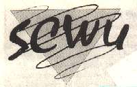
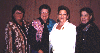

SCWU - Southern California Women for Understanding
P.O. Box 2127
Ventura, CA 93002-2127
Phone: (800) 798- 7298
e-mail: scwuofc@aol.com
* WHO WE ARE
SCWU was founded in 1976 in Los Angeles. We are lesbians from all walks
of life who seek in SCWU a common
denominator in educational functions. We are lesbians who want a safe
place to share our strengths, concerns, cultural diversity, and resources
with each other, and who seek in SCWU support for our lifestyles. Our
membership is composed of women who value and contribute to the community.
Our aim is to eradicate negative stereotypical images of lesbians by
example and through positive educational programs about our concerns,
issues and lives. Our mission is to empower lesbians to achieve their
potential.
* CHAPTERS
Inland (909) 422-3303
Long Beach/Orange County (714) 633-2608
San Fernando Valley (818) 905-8785
San Gabriel Valley (818) 359-1885
Ventura (805) 644-9564
Westside Los Angeles (310) 820-8644
Chapter activities are listed in the SWCU Newsletter. To subscribe see
below.
* EVENTS AND ACTIVITIES

Sue Williams, Bev Taylor, Paula Barnette and Mary Du Cusin.
Paula was the recipient of SCWU's Ventura Chapter first $500 scholarship.
* CAMP SCWU - An annual weekend event. For more information call
1-800-798-7298.
* THE SCWU NEWSLETTER
Our newsletter is published 6 times a year, is full of information about
chapter activities and is free
to SCWU members. For more information call 1-800-798-7298.
Web site created by the Lesbian Legacy Collection (ONE/IGLA)
as a community service.
Link